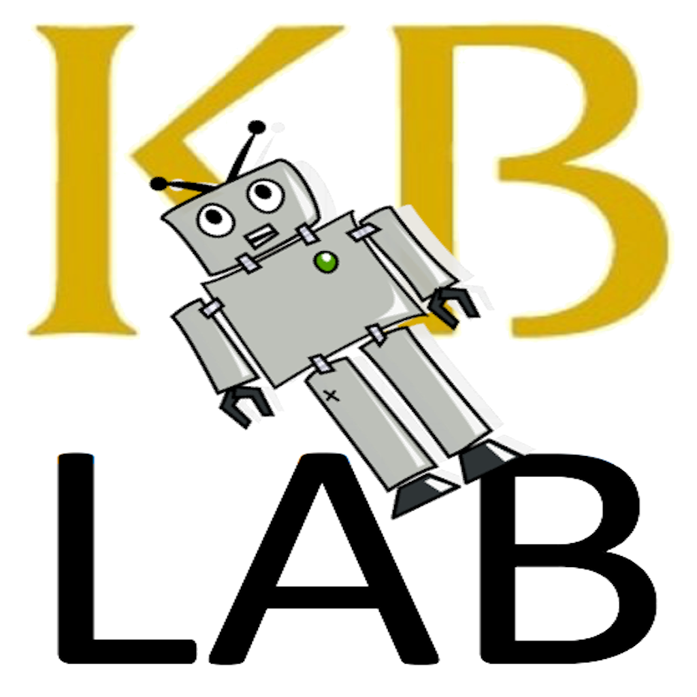

Chatbot builder (NL) backing the KB Lab Bot prototype
René van der Ark (KB - 2017)
Background (Hay Kranen & HackaLOD)
The Erfgoedbot
Inspiration (
chatfuel
)
The chatbot builder CMS
Links
Github
|
Facebook page (currently under review)
|
KB lab
